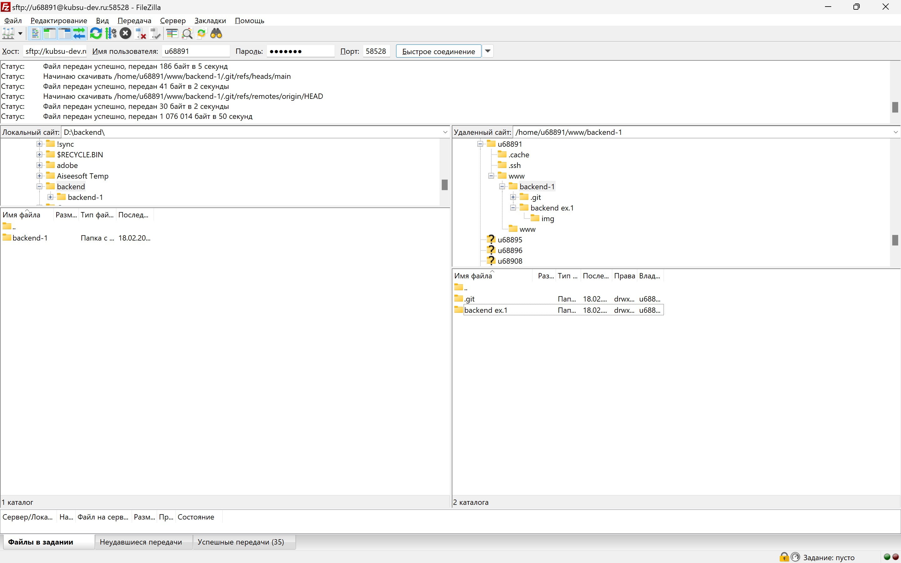

1. Получить от преподавателя на практике логин и пароль доступа к учебному серверу kubsu-dev.ru. Подключиться к нему по SSH с помощью клиента Putty, команды ssh или онлайн-версии ssh-клиента.
Подключаемся к серверу с помощью программы PuTTY. Вводим host name или IP адрес. Используем порт 58528

2. С помощью команды ping на учебном сервере узнать IP-адрес веб-сервера kubsu.ru, сделать скриншот вызова команды ping.

Ping позволяет проверить подключение к другому компьютеру на уровне IP. Команда отправляет серию небольших пакетов данных на указанное устройство, а затем показывает время ответа.
3. С помощью команды nslookup узнать A-записи и MX-записи домена kubsu.ru и kubsu-dev.ru

А записи указывают на IPv4 адрес сервера, связанного с определенным доменным именем.

С помощью команды nslookup -type=MX можно узнать MX-записи домена. Это записи, которые определяют, какие почтовые серверы ответственны за прием почты для данного домена. Они сообщают другим почтовым серверам, куда нужно доставлять электронную почту, отправленную на адреса в этом домене.
4. С помощью команды whois узнать дату регистрации домена kubsu.ru и kubsu-dev.ru

5. Сгенерировали ssh ключ с помощью команды ssh-keygen -t rsa.
Далее склонировали репозитарий в папку www с помощью команды git clone.
6. С помощью программы FileZilla или любого другого клиента SFTP соединиться с учебным сервером с вашим логином и паролем по протоколу SFTP и скопировать на локальный компьютер файлы задания из каталога www.
Далее обновили скриншоты в index.html, заккомитили в github с помощью команд git add, git commit, git push. Далее использовали команду git pull на учебном сервере, чтобы получить изменения.